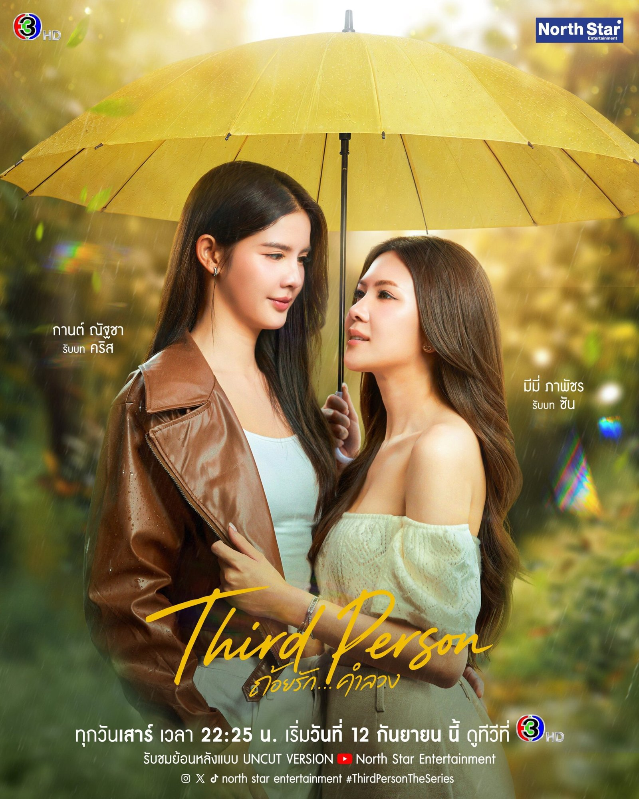

Official promotional artwork. Rights remain with the rights holder.
Next episode
Third Person
Garn & Mimie
Four years after an accident, Chris has rebuilt a life with Nadia until a woman named Sun starts pulling at what she was told.
Where to watch
Start with the official episode upload.
Watch on YouTube ↗YouTube uncut route, as recorded in the Tracker.
Official listing reviewed 2026-10-21. Playback varies by country.
Sat 24 Oct · 10:25 PM ICT
Recorded in the Tracker; evidence and edition notes below.
ICT is UTC+7. This page does not convert to your local time.
Before you press play
A listing is not a country guarantee.
North Star Entertainment official uncut EP6, part 1 of 4. Saturdays 23:30 ICT; later uploads may appear on the studio channel. Listing reviewed 19 Oct 2026, playback and subtitles not tested.
Episode times follow the recorded Thai broadcast schedule; the streaming edition can appear later. Source review is separate from a playback test. See the full Tracker record and evidence.
Sterling’s verdict · Personal opinion
Sterling’s take
I’m loving Third Person more and more, even with YouTube being my viewing route here in America. After episode six, we’re beginning to untangle this mystery, but I still have no idea how it will end.
From the 19 October 2026 newsletter. Rankings and reactions belong to that issue.
Read the complete issue →The episode schedule
Times shown are the recorded Thailand schedule. “Scheduled” does not confirm that a stream is available.
- EP 1Scheduled date passed
- EP 2Scheduled date passed
- EP 3Scheduled date passed
- EP 4Scheduled date passed
- EP 5Scheduled date passed
- EP 6Scheduled date passed
- EP 7Scheduled
- EP 8Scheduled
- EP 9Scheduled
- EP 10 · FinaleScheduled
Sources and checks
The viewing button above is the official title listing, reviewed 2026-10-21. These records explain the schedule and its limits.
- NORTH STAR ENTERTAINMENT official episode 7 spot confirms the Saturday Channel 3HD and uncut YouTube release clocksChecked 2026-10-20
- NORTH STAR ENTERTAINMENT official uncut episode 6 upload confirms the episode aired on 17 Oct 2026 with English subtitlesChecked 2026-10-18
- NORTH STAR ENTERTAINMENT official episode 6 spot confirms the Saturday release remains on scheduleChecked 2026-10-16
- NORTH STAR ENTERTAINMENT official uncut episode 5 upload confirms the episode airedChecked 2026-10-11
- NORTH STAR ENTERTAINMENT official next-episode preview for episode 6Checked 2026-10-11
Read our corrections if a listing or episode count has changed.
Free every Monday
The viewing link gets you started.
The Monday email brings the week together.
Sterling’s Top Six, essays, Dao’s films and what’s coming next. No payment or app required.
Get the free Monday newsletterAfter signing up, check your inbox or spam and click the confirmation link.